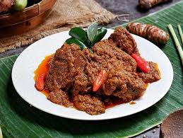

Gaya Hidup Masyarakat Sumatera Barat
Masyarakat Sumatera Barat memiliki gaya hidup yang kaya akan tradisi dan budaya. Beberapa aspek gaya hidup yang menarik untuk dicermati antara lain:
- Masakan Khas: Nasi Padang, Rendang, dan Sate Padang.
- Tradisi dan Adat: Perayaan Hari Raya, Upacara Adat, dan Festival Budaya.
- Keseniannya: Tari Piring, Musik Tradisional, dan Kerajinan Tangan.
- Olahraga: Pencak Silat dan Olahraga Tradisional lainnya.